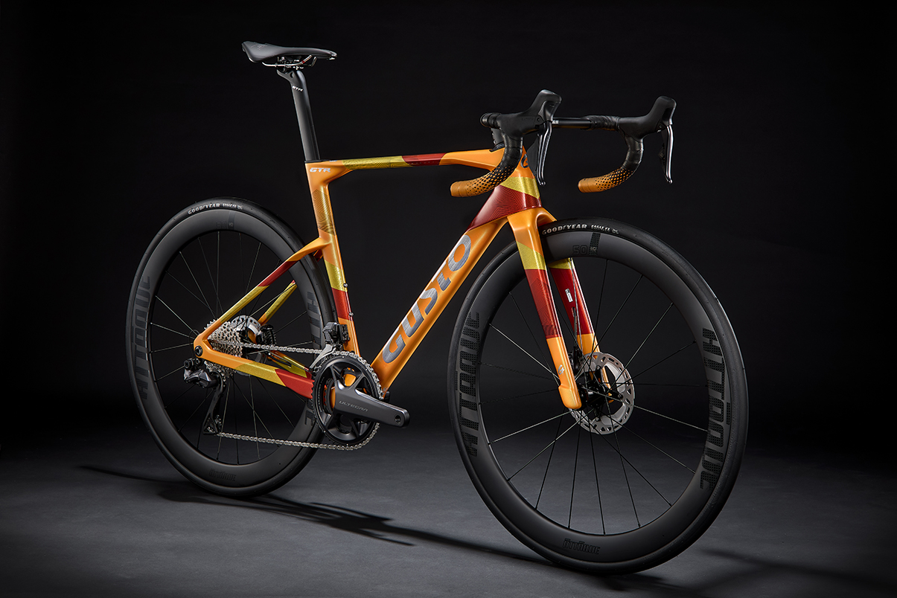

The bicycle
Choose the Gusto you actually want.
Start with the right model, fit and setup through a participating specialist dealer.
Independent service / Recur
A flexible route to a Gusto bicycle: make monthly payments over 24 months, then explore the options to keep, return or renew under your individual Recur agreement.
How it works
What Recur is
Recur is a supported bicycle upgrade cycle. It combines a proposed 24-month plan with specialist dealer setup, servicing and a clear decision at the end of the agreement.
It is not simply a finance calculator. The monthly illustration is one part of a longer rider, dealer and bicycle relationship.
The bicycle
Start with the right model, fit and setup through a participating specialist dealer.
The support
Your dealer remains part of the journey, helping maintain the bicycle and explain any condition requirements.
The next move
The proposed journey includes keeping, returning or renewing, subject to your final agreement and bicycle condition.
How it works
Recur is designed around the whole ownership journey, from choosing and fitting the bicycle to servicing it and deciding what comes next.
Choose and size your Gusto with a participating Recur dealer. They confirm the bicycle, setup, eligibility and final agreement.
The proposed 24-month plan includes monthly payments and servicing in line with the final agreement, with specialist dealer support.
At the end of the proposed term, discuss keeping, returning or renewing with your dealer, subject to agreement and condition.
The monthly illustration
The calculator illustrates how a 24-month monthly figure could be structured. It is not the Recur service itself and it is not a finance quote.
Illustration calculator
Enter estimates for your next bicycle, contribution and future value. The illustration updates as you type.
Dealer confirmation mattersAny contribution depends on inspection, condition, service history, eligibility and final terms.
An illustrative example
See your 24-month illustration update as you enter your figures.
How this illustration works(Bike price − contribution − estimated future value) ÷ 24, rounded to the nearest whole pound.
This is not a quote, guaranteed future value or offer. Recur is in development; any 24-month plan, finance provider, rates, eligibility, availability and final agreement terms remain subject to confirmation.
Ready for what comes next?
Leave your details and the Gusto UK team can follow up about Recur availability and the next step with a participating dealer.